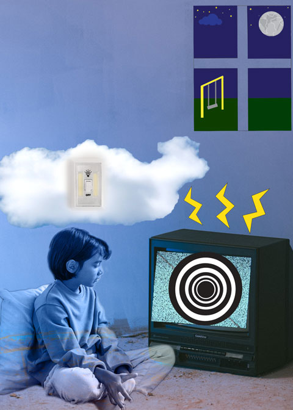
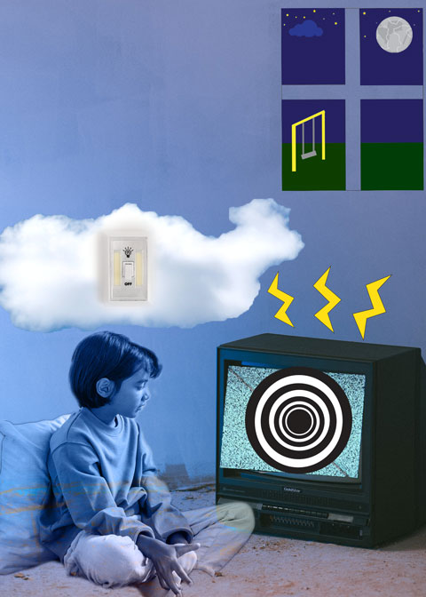
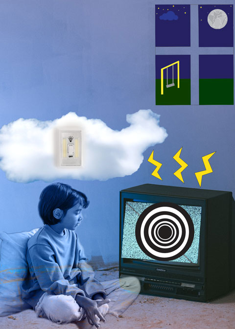

 Hello! Now that you know my name I would like to tell you more about me.
Queens, New York is where I was born and raised. I am daughter to Ecuadorian Immigrant Parents. I was raised both in Astoria and Jamaica (Queens).
My favorite things about my borough is the culture, the diversity and the feeling of home.
Since I could remember I had a passion for cool one-of-kind art and clothing. Art has been a big part of my life.
During my teens years, I let go of that part of myself, until now. Now I learned how to use my love for art in the modern tech world.
I am the middle child out of six children. My personality has always led me to be independent, kind and artistic. Like many students, I came into college confused about my future
I had my galbladder removed when I was 16 (Unsure if that is TMI). But, that event is what brought me here. After my surgery, I was convinced I wanted to be a nurse.
I imagined my life being a nurse, I was prepared for the long shifts and no matter what people told me, I persisted.
Long story short, I am taking organic chemistry and I realize nursing isn't something I am passionate about.
I am given advice and am told to take Media Studies (My initial plan was to be in Marketing). Now I realize that, Marketing is still my interest but I enjoy Media more.
I get to be creative while learning technical skills.

Here are some of my works!
IF YOU
ARE READING THIS
EVERYTHING HAPPENS FOR
A REASON
I enjoyed telling you a little more about my story and how life brought me to this course. Here is the link for the song I am currently listening to :)